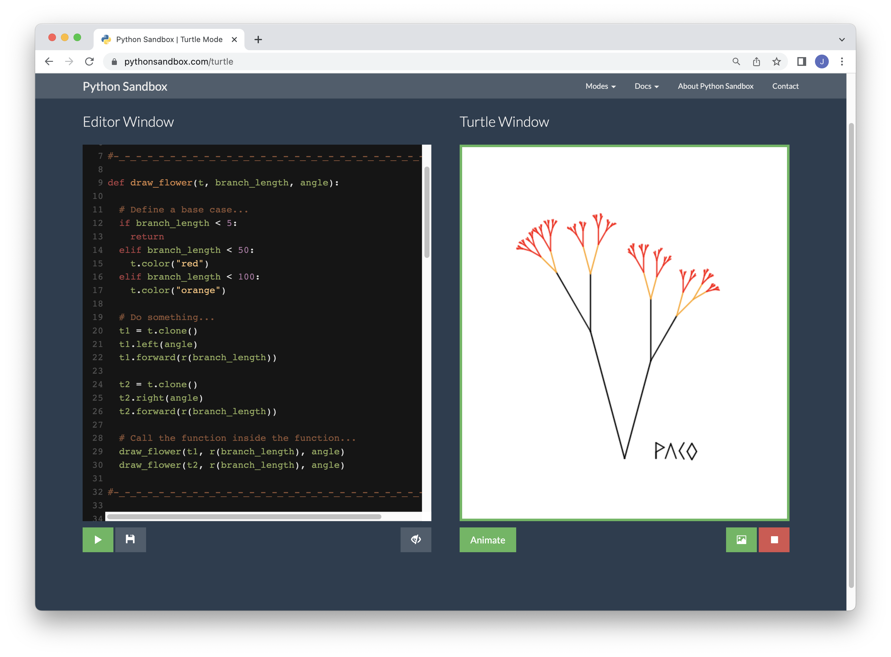

Week 10: Hyperskill Part 3
(June 19 - June 24) Cinema Room REST Service
Hyperskill
Previously I had said that after the Music Advisor I'd go for the Account Service project, however I quickly changed my mind after seeing the difficulty rating and went for the Cinema Room project instead. Despite being classified as "hard" this project proved a lot easier than the first one due to not having any of the roadblocks mentioned in previous entries: The instructions were more straightforward, it was up to date and the tests were written to reflect the actual requirements for each stage.

Instead of a couple weeks it took a total of five days to complete the Cinema Room: Three days for the sixty-something lessons, working six hours at a time give or take, and two more days for the four project stages.

Due to being short on time I tried to jump into the Account Service project stages right away, but got stuck in stage 2/7 which deals with Spring Security. I went back to the lessons and now it seems like I might be able to work through the second stage but I don't see myself progressing through the other five stages fast enough to finish by the 27th.
Lightning Talks
I did my second lightning talk on Recursion and Recursive Functions. I thought it would be an interesting topic with many visual examples, it also gave me the opportunity to relax a little and code a small program for drawing flowers as a break from the Hyperskill stuff.
While I think there was a marked improvement from my previous talk I still see many areas that need work for the last talk next week. Not only individually but also as teams the organization for the LTs has been too loose and that's something we should improve for the closing session, I'd like to create an introductory slide with our names and topics so that guests have something to see while they wait for the LTs to start.
I'm yet to decide on the topic for my last LT, however I really liked the angle Karen gave to her talk about data driven choices in F1. Tying the topic to one area of application made it that much easier to follow, so I'd like to do something like that. I was tempted to do an LT about coding patterns in general and how they originated in Christopher Alexander's A Pattern Language, a book on Urbanism and Architecture. However I'd rather focus on something that I've picked up during the apprentice program.
Agile Month
Something I've neglected to mention in previous entries is that we're right in the middle of Agile Month at Encora, and we've been having a series of talks on the matter. This week we met with Oscar Hernandez for the talk User Story Slicing, despite the name it also explained what a user story was from the ground up, something very useful since I'd only been introduced to the topic recently. To me it sounds similar to "personas" used in other design fields.

We had one more talk before the end of the week however it wasn't related to Agile. We met with Rafael Gutierrez who had been helping us with some Java topics to talk about Collections. It was very well timed, since it touched on the same topics I was looking at in the Hyperskill platform.

Conclusion
While I feel kinda bad about being unable to finish all three Hyperskill projects in the time given, I see many more positives than negatives. Before this module Java was like a huge wall that I saw no way to climb, while now I see a clear path forward.
I'll look into what I can do to further practice the skills I've picked up so far. Hyperskill has other projects that are supposed to be completed in one go, I think those would be a good option if we retain access to the platform.
Uploaded on June 25, 2023